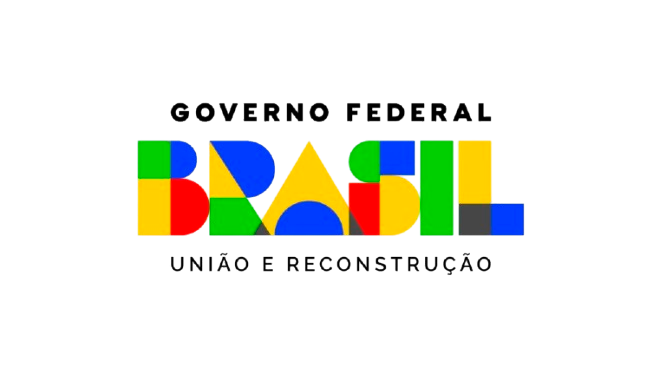
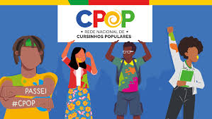
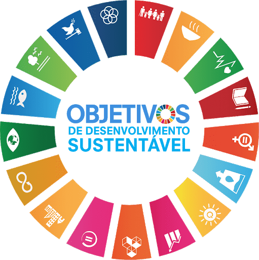

Campanha natalina entrega cestas básicas a famílias assistidas
Desde 2022, realizamos campanhas anuais para garantir uma ceia digna às famílias do território. Conteúdo a confirmar com a ONG.
Ler mais →O Instituto de Direitos Humanos AME foi fundado em abril de 2020 por Lucas da Silva Alves Pessoa, morador do Morro Santo Amaro e atual presidente da organização. A motivação foi urgente: diante do agravamento da fome e da vulnerabilidade social durante a pandemia de COVID-19, Lucas e uma rede de moradores e colaboradores passou a organizar doações, distribuir cestas básicas e apoiar famílias em situação de risco.
O que começou como uma resposta emergencial não parou. Nos anos seguintes, o Instituto cresceu, se formalizou, expandiu suas ações e passou a atuar em múltiplas frentes: educação popular, equidade de gênero e raça, cultura audiovisual, pesquisa comunitária, justiça climática e advocacy em direitos humanos.
Hoje, o Instituto AME é uma das organizações comunitárias mais ativas do Morro Santo Amaro — e uma prova de que a favela é território de potência, conhecimento e transformação social.
Além dos prêmios, o AME marcou presença internacional na Jornada Mundial da Juventude (Portugal, 2023) e no World Youth Festival (2024), levando a pauta dos direitos humanos e da juventude da favela ao debate global.
Promover direitos humanos, educação popular, justiça climática, equidade racial e de gênero e fortalecimento comunitário por meio de ações territorializadas, construídas junto às populações periféricas.
Consolidar-se como referência nacional em educação popular, pesquisa comunitária, justiça climática e fortalecimento de territórios periféricos.
Direitos humanos · Justiça social · Educação popular · Participação comunitária · Diversidade · Equidade racial · Equidade de gênero · Transparência · Ética institucional · Sustentabilidade · Proteção integral · Democracia · Combate às discriminações · Justiça climática
O Instituto de Direitos Humanos AME nasceu em 2020 como resposta à fome durante a pandemia. Desde então, cresceu, se fortaleceu e se tornou uma referência em educação popular, justiça climática, equidade de gênero e raça e fortalecimento comunitário no Morro Santo Amaro, no Rio de Janeiro.
Nosso trabalho é feito por moradores, para moradores — com escuta, compromisso e respeito ao território.
O Instituto é feito de pessoas comprometidas com a comunidade — muitas delas, moradoras do próprio território.
Instituições e organizações que sustentam e potencializam nossas ações no território.



Também atuamos em rede com CRAS, CREAS e o programa Espanhol Agora. Confirmar logos oficiais e novos parceiros com a ONG.